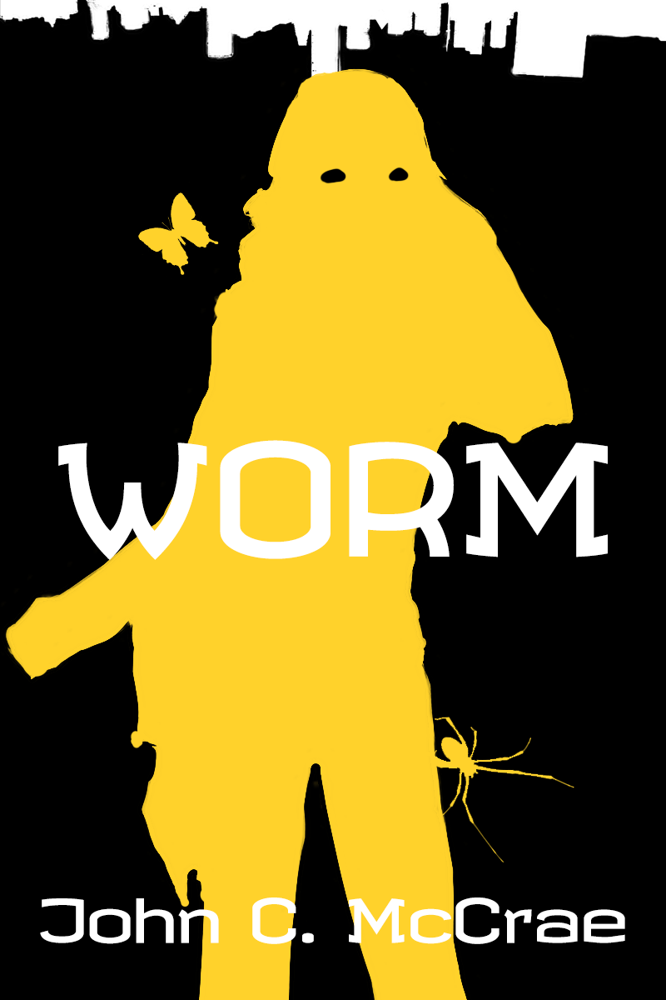
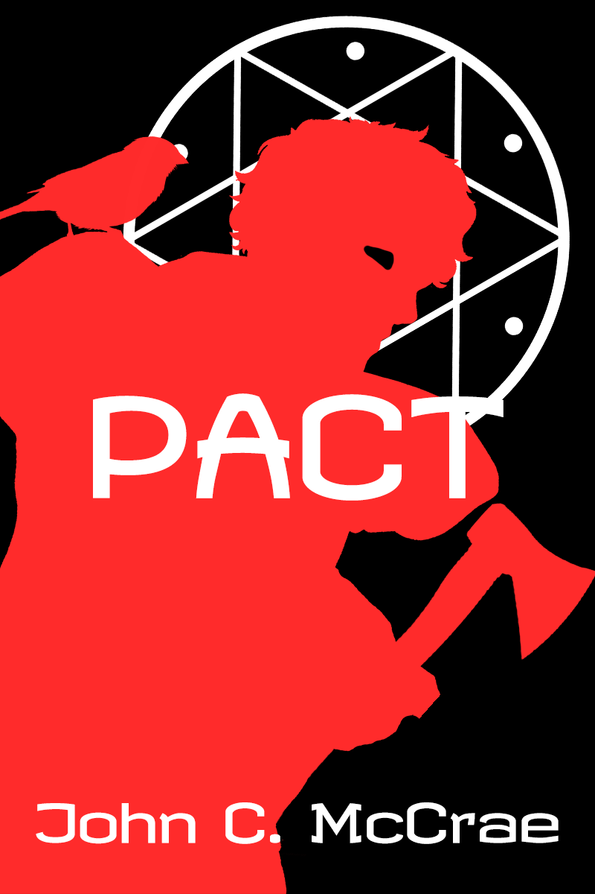

personal canon
a list of media, fictional or otherwise that i quite like. sure, they've influenced me in some ways, but i'm not entirely sure to what extent.
i feel obligated to remain a bit vague about these works, and i suggest you read them blind, even with my summaries of them.
writings
literature, web serials, written media.
-
Worm by Wildbow (John C. McCrae)

a web serial about a broken girl with bug powers doing the right thing for the wrong reasons.
Read online for free here -
Pact by Wildbow (John C. McCrae)

a web serial about a man who inherited misery
Read online for free here -
I'm Glad My Mom Died by Jennette McCurdy

somehow, Jennette paints tragedy as comedy in her memoir about her mother.
Goodreads -
How To Argue With A Meat Eater (And Win Every Time) by Ed Winters

this book made me more inspired and confident in combatting cognitive dissonance.
Website -
Wij Slaven Van Suriname by Anton de Kom

it fills my heart with joy that for future generations, this work will be common knowledge.
Website
visual
films, series, graphic design, visual media.
-
False Memory (Jiyi Guanli Ju) by Studio Flint Sugar, Studio Tumble

an animated series about memories.
-
Look Back by Tatsuki Fujimoto

an animated movie about drawing.
-
Full Metal Alchemist by Hiromu Arakawa

a manga about two brothers. not necessarily deep or anything
-
City of God directed by Fernando Meirelles and Kátia Lund

a movie about growing up in a favela.
-
Happy Earth Day by Shigeo Fukuda

people are responsible for the environment. this is just a poster, but it speaks a lot to me.
interactive media
tabletop roleplaying games, digital experiences, video games.
-
Deltarune by Toby Fox

a game about hopes and dreams.
learn more -
Disco Elysium by ZA/UM

a game like no other tainted by corporate greed.
learn more -
Night In The Woods by Infinite Fall

a game about getting older, not better.
learn more -
Mouth Washing by Wrong Organ

a game about ego.
learn more -
Expedition 33 by Sandfall Interactive

a game about grief.
learn more
music
singles, albums, EPs - music in general, really.
-
The Mocking Stars - LAUSSE THE CAT

favourite track: I.D.W.G.A.J
listen here -
Needles, California - Bryce Bishop

favorite track: Shocker
listen here -
the first glass beach album - glass beach

this band broke up. favourite track: bedroom community
listen here -
Nurture - Porter Robinson

favourite track: Something Comforting
listen here -
vertigo - EDEN

favourite track: wrong
listen here